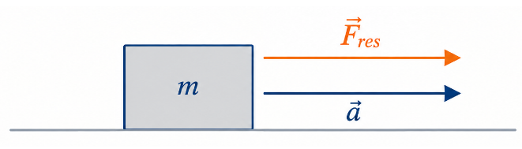

1º Ano | Aula 17: 2ª Lei de Newton (Princípio Fundamental da Dinâmica)
📚 Resumo
A 2ª Lei de Newton (Princípio Fundamental da Dinâmica) estabelece que a força resultante ($\vec{F}_{res}$) aplicada a um corpo é igual ao produto de sua massa ($m$) pela aceleração ($\vec{a}$) adquirida por ele.
Equação Fundamental: $$\vec{F}_{res} = m \cdot \vec{a}$$
No SI: Força em newtons ($\text{N}$), Massa em quilogramas ($\text{kg}$) e Aceleração em metros por segundo ao quadrado ($\text{m/s}^2$).
📖 2ª Lei de Newton: Princípio Fundamental da Dinâmica
1. O Caráter Vetorial da Segunda Lei
A Segunda Lei de Newton relaciona a força resultante atuante em um corpo com a aceleração por ele adquirida. Como a força e a aceleração são grandezas vetoriais, a equação matemática fundamental que rege esse princípio é dada por:
$$\vec{F}_{res} = m \cdot \vec{a}$$
Dessa expressão vetorial, decorrem três características essenciais:
Módulo: $F_{res} = m \cdot a$ (a intensidade da força é proporcional à aceleração e à massa).
Direção: O vetor aceleração ($\vec{a}$) possui mesma direção do vetor força resultante ($\vec{F}_{res}$).
Sentido: O vetor aceleração ($\vec{a}$) possui mesmo sentido do vetor força resultante ($\vec{F}_{res}$).

Figura 1: Por ser uma relação vetorial, o vetor aceleração $\vec{a}$ possui rigorosamente a mesma direção e o mesmo sentido do vetor força resultante $\vec{F}_{res}$.
2. Proporcionalidade e Massa (Inércia)
A massa ($m$) é uma grandeza escalar estritamente positiva que atua como constante de proporcionalidade da equação:
Para uma mesma massa: A aceleração é diretamente proporcional à força resultante aplicada (dobrando a força, dobra-se a aceleração).
Para uma mesma força resultante: A aceleração é inversamente proporcional à massa do corpo (dobrando a massa, a aceleração reduz-se à metade).
3. Unidade de Força no Sistema Internacional (SI)
Por definição: $1\text{ N} = 1\text{ kg} \cdot \text{m/s}^2$. Um newton ($\text{N}$) é a intensidade da força resultante necessária para imprimir a uma massa de $1\text{ kg}$ uma aceleração de $1\text{ m/s}^2$.
💡 Física em Ação
🏎️ Carros de Corrida vs. Caminhões
Carros de Fórmula 1 possuem alta potência e massa muito reduzida (construídos em fibra de carbono). Com menor massa ($m$), a mesma força exercida pelo motor produz acelerações ($\vec{a}$) extremamente altas se comparadas às de veículos pesados.
🚀 Frenagem de Emergência
Para desacelerar (imprimir uma aceleração negativa) um automóvel rapidamente, o sistema de freios precisa aplicar uma força resultante considerável contrária ao movimento. Quanto maior a massa do veículo carregado, maior deve ser a força exercida pelos freios.
✅ 5 Questões Resolvidas (R 1 a 5)
R 1: Cálculo Direto de Força
Enunciado: Um bloco de massa $4\text{ kg}$ desliza sobre uma superfície horizontal sem atrito sob a ação de uma força constante, adquirindo aceleração de $3\text{ m/s}^2$. Qual é o módulo da força resultante aplicada?
Resolução: Aplicando a 2ª Lei de Newton em módulo ($F_{res} = m \cdot a$):
$$F_{res} = 4\text{ kg} \cdot 3\text{ m/s}^2 = 12\text{ N}$$
A força resultante é de $12\text{ N}$.
R 2: Determinação da Aceleração
Enunciado: Um objeto de $5\text{ kg}$ é puxado por duas forças horizontais de mesmo sentido, de módulos $15\text{ N}$ e $10\text{ N}$. Desprezando atritos, determine a aceleração do objeto.
Resolução: Como as forças possuem o mesmo sentido, a força resultante é a soma dos módulos:
$$F_{res} = 15 + 10 = 25\text{ N}$$
Usando $F_{res} = m \cdot a$:
$$25 = 5 \cdot a \implies a = \frac{25}{5} = 5\text{ m/s}^2$$
R 3: Forças em Sentidos Opostos
Enunciado: Um corpo de massa $2\text{ kg}$ está sujeito a duas forças horizontais opostas: $F_1 = 18\text{ N}$ (para a direita) e $F_2 = 6\text{ N}$ (para a esquerda). Calcule o módulo e o sentido da aceleração.
Resolução: A força resultante é a diferença entre as intensidades:
$$F_{res} = 18 - 6 = 12\text{ N}\text{ (para a direita)}$$
Pela 2ª Lei de Newton, como $\vec{a}$ tem o mesmo sentido de $\vec{F}_{res}$:
$$12 = 2 \cdot a \implies a = 6\text{ m/s}^2\text{ (para a direita)}$$
R 4: Relação Força e Dinâmica de Movimento
Enunciado: Um brinquedo de $0,5\text{ kg}$ parte do repouso e atinge a velocidade de $10\text{ m/s}$ em $2\text{ s}$ sob ação de uma força constante. Qual é a intensidade dessa força?
Resolução: Primeiro calcula-se a aceleração pela cinemática:
$$a = \frac{\Delta v}{\Delta t} = \frac{10 - 0}{2} = 5\text{ m/s}^2$$
Agora, calcula-se a força resultante:
$$F_{res} = m \cdot a = 0,5 \cdot 5 = 2,5\text{ N}$$
R 5: Massa e Variação de Aceleração
Enunciado: Uma força constante $F$ aplicada em um corpo de massa $m$ gera aceleração de $8\text{ m/s}^2$. Se a mesma força $F$ for aplicada em um corpo de massa $2m$, qual será a nova aceleração?
Resolução: Pela 2ª Lei de Newton, $F = m \cdot 8$.
Para a nova massa ($2m$), temos $F = (2m) \cdot a_{nova}$.
Igualando as expressões de $F$:
$$m \cdot 8 = 2m \cdot a_{nova} \implies a_{nova} = \frac{8}{2} = 4\text{ m/s}^2$$
A aceleração cai pela metade.
✍️ 5 Questões Propostas (P 6 a 10)
P 6: Massa Desconhecida
Enunciado: Uma força de intensidade $30\text{ N}$ atua sobre um corpo e produz nele uma aceleração de $6\text{ m/s}^2$. Qual é a massa desse corpo?
Resolução: Aplicando $F_{res} = m \cdot a$:
$$30 = m \cdot 6 \implies m = \frac{30}{6} = 5\text{ kg}$$
P 7: Variação de Velocidade
Enunciado: Um carrinho de $3\text{ kg}$ desloca-se em linha reta. Uma força horizontal de $12\text{ N}$ atua sobre ele durante $4\text{ s}$. Qual é a variação de velocidade sofrida pelo carrinho nesse intervalo de tempo?
Resolução: Cálculo da aceleração:
$$F_{res} = m \cdot a \implies 12 = 3 \cdot a \implies a = 4\text{ m/s}^2$$
Como $a = \frac{\Delta v}{\Delta t}$:
$$4 = \frac{\Delta v}{4} \implies \Delta v = 16\text{ m/s}$$
P 8: Força Perpendicular
Enunciado: Sobre uma massa de $2\text{ kg}$ atuam duas forças perpendiculares de módulos $6\text{ N}$ e $8\text{ N}$. Calcule o módulo da aceleração resultante adquirida pela massa.
Resolução: Como as forças são perpendiculares, a resultante é obtida por Pitágoras:
$$F_{res}^2 = 6^2 + 8^2 = 36 + 64 = 100 \implies F_{res} = 10\text{ N}$$
Pela 2ª Lei de Newton:
$$10 = 2 \cdot a \implies a = 5\text{ m/s}^2$$
P 9: Frenagem e Força
Enunciado: Um automóvel de $1000\text{ kg}$ trafega a $20\text{ m/s}$ e freia até parar completamente em $5\text{ s}$. Qual é a intensidade da força resultante média aplicada pelos freios?
Resolução: Cálculo do módulo da desaceleração:
$$|a| = \frac{|\Delta v|}{\Delta t} = \frac{20}{5} = 4\text{ m/s}^2$$
Cálculo da força resultante de frenagem:
$$F_{res} = m \cdot a = 1000 \cdot 4 = 4000\text{ N}$$
P 10: Comparação de Sistemas
Enunciado: Uma força constante $F$ imprime aceleração $a_1$ a um corpo de massa $m_1 = 2\text{ kg}$ e aceleração $a_2$ a um corpo de massa $m_2 = 6\text{ kg}$. Determine a razão $\frac{a_1}{a_2}$.
Resolução: Como a força $F$ é idêntica para os dois corpos:
$$F = m_1 \cdot a_1 = m_2 \cdot a_2$$
$$2 \cdot a_1 = 6 \cdot a_2 \implies \frac{a_1}{a_2} = \frac{6}{2} = 3$$
🎓 TESTES (T 11 a 15)
T 11: (IFCE 2016) Proporcionalidade na 2ª Lei
Para que uma partícula de massa $m$ adquira uma aceleração de módulo $a$, é necessário que atue sobre ela uma força resultante $F$. O módulo da força resultante para uma partícula de massa $2m$ adquirir uma aceleração de módulo $3a$ é:
A) $7F$
B) $4,5F$
C) $2,6F$
D) $5F$
E) $6F$
Resolução: Alternativa E.
A força inicial é dada por $F = m \cdot a$.
Para a nova situação com massa $2m$ e aceleração $3a$, a nova força $F'$ será:
$$F' = (2m) \cdot (3a) = 6 \cdot (m \cdot a) = 6F$$
T 12: (UFRGS 2017) Determinação de Massa
Aplica-se uma força de $20\text{ N}$ a um corpo de massa $m$. O corpo desloca-se em linha reta com velocidade que aumenta $10\text{ m/s}$ a cada $2\text{ s}$. Qual o valor, em $\text{kg}$, da massa $m$?
A) $5$
B) $4$
C) $3$
D) $2$
E) $1$
Resolução: Alternativa B.
A aceleração é dada pela variação da velocidade no tempo:
$$a = \frac{\Delta v}{\Delta t} = \frac{10}{2} = 5\text{ m/s}^2$$
Aplicando a Segunda Lei de Newton ($F = m \cdot a$):
$$20 = m \cdot 5 \implies m = \frac{20}{5} = 4\text{ kg}$$
T 13: (UECE) Alteração de Massa e Aceleração
Uma única força agindo sobre uma massa de $2,0\text{ kg}$ fornece a esta uma aceleração de $3,0\text{ m/s}^2$. A aceleração, em $\text{m/s}^2$, produzida pela mesma força agindo sobre uma massa de $1,0\text{ kg}$ é:
A) $1,5$
B) $3,0$
C) $4,5$
D) $6,0$
Resolução: Alternativa D.
Cálculo da força aplicada:
$$F = m_1 \cdot a_1 = 2,0 \cdot 3,0 = 6,0\text{ N}$$
Aplicando a mesma força para a massa de $1,0\text{ kg}$:
$$F = m_2 \cdot a_2 \implies 6,0 = 1,0 \cdot a_2 \implies a_2 = 6,0\text{ m/s}^2$$
T 14: (PUC-RJ) Bolas de Boliche e Aceleração
Existem bolas de boliche de diversas massas. Suponha que você jogue, com forças iguais, três bolas, uma de cada vez. A primeira tem massa $m_1 = m$, a segunda $m_2 = \frac{m}{2}$ e a terceira $m_3 = 2m$. Suas respectivas acelerações $a_1$, $a_2$ e $a_3$ satisfazem a relação:
A) $a_1 = a_2 = a_3$
B) $a_2 = 2 a_1$ e $a_3 = \frac{a_1}{2}$
C) $a_1 = 2 a_2$ e $a_3 = \frac{a_2}{2}$
D) $a_3 = 2 a_1$ e $a_2 = \frac{a_1}{2}$
E) $a_2 = a_1$ e $a_3 = 2 a_1$
Resolução: Alternativa B.
Como as forças são iguais ($F_{res} = F$):
- Bola 1: $F = m \cdot a_1 \implies a_1 = \frac{F}{m}$
- Bola 2: $F = \left(\frac{m}{2}\right) \cdot a_2 \implies a_2 = \frac{2F}{m} = 2a_1$
- Bola 3: $F = (2m) \cdot a_3 \implies a_3 = \frac{F}{2m} = \frac{a_1}{2}$
T 15: (FUVEST-SP) Equação Horária e Força Resultante
Um corpo de $5\text{ kg}$ descreve uma trajetória retilínea que obedece à seguinte equação horária $S = 3t^2 + 2t + 1$, onde $S$ é medido em metros e $t$ em segundos. O módulo da força resultante sobre o corpo é:
A) $30\text{ N}$
B) $15\text{ N}$
C) $10\text{ N}$
D) $5\text{ N}$
E) $2\text{ N}$
Resolução: Alternativa A.
Comparando a equação $S = 3t^2 + 2t + 1$ com a função horária do MUV ($S = S_0 + v_0 t + \frac{a}{2}t^2$):
$$\frac{a}{2} = 3 \implies a = 6\text{ m/s}^2$$
Aplicando a 2ª Lei de Newton:
$$F_{res} = m \cdot a = 5\text{ kg} \cdot 6\text{ m/s}^2 = 30\text{ N}$$